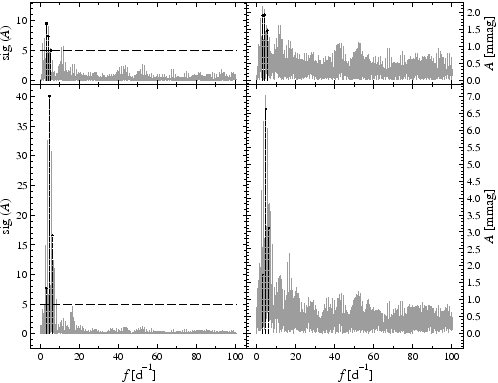

The keyword sim:signal is given with five floating-point parameters. They specify
Example. The sample project sim-signal contains the simulation and analysis of two sinusoidal signals, one over the entire time base, one on a restricted time interval. In this sample project, the V photometry of IC4996#89 (see Example SigSpecNative, p. ) is modified, according to the line
) is modified, according to the line
sim:add
in the file sim-signal.ini. The line
sim:signal 0 0 0.00727 2521.4542 4.68573
produces a sinusoidal signal over the entire time base (corresponding to the first two arguments being zero). The amplitude is 7.27 mmag, and the frequency is 4.68573 cycles per day. At HJD2452521.4542 the sinusoid shall attain zero value. Correspondingly, the line
sim:signal 2521 2525 0.00543 2524.2356 6.24512
is associated to a sinusoid with amplitude 5.43 mmag, frequency 6.24512 cycles per day, and a zeropoint at HJD2452524.2356. This signal is not generated for the entire time base but only from HJD2452521 to HJD2452525. Fig.27 displays the light curves of the original and the synthetic data.
The screen output contains the lines
*** simulator: add *****************************************
signal
signal
indicating that the simulator adds the synthetic values to the original observables, and that two sinusoids are generated.

Fig.28 (p. ) compares the Fourier spectra of the synthetic time series to those of the original time series (as used in Example SigSpecNative, p.
) compares the Fourier spectra of the synthetic time series to those of the original time series (as used in Example SigSpecNative, p. , and displayed in Fig.2, p.
, and displayed in Fig.2, p. . Both signals introduced by the simulator are identified, but the prewhitening of the component at 6.25 cycles per day is performed over the whole time base, although the signal is present only in an interval. This introduces additional noise, which causes the signal at 3.99 cycles per day to drop below the significance limit of 5 and avoids the detection of the component at 5.41 cycles per day.
. Both signals introduced by the simulator are identified, but the prewhitening of the component at 6.25 cycles per day is performed over the whole time base, although the signal is present only in an interval. This introduces additional noise, which causes the signal at 3.99 cycles per day to drop below the significance limit of 5 and avoids the detection of the component at 5.41 cycles per day.


Next: Polynomial trend
Up: The Built-in Simulator
Previous: Random numbers
Contents
Piet Reegen
2009-09-23